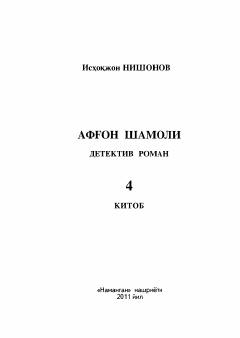

ASAfgʻonistondagi siyosiy voqealar va Mulla Umar faoliyati haqidagi detektiv roman.
Ushbu asar Afgʻonistondagi murakkab siyosiy vaziyat va Mulla Umarning hokimiyat tepasiga kelish jarayonlarini tasvirlovchi detektiv roman. Kitobda Tolibon harakatining shakllanishi, tashqi kuchlarning taʼsiri va mamlakatdagi fuqarolar urushi voqealari badiiy tilda yoritilgan.